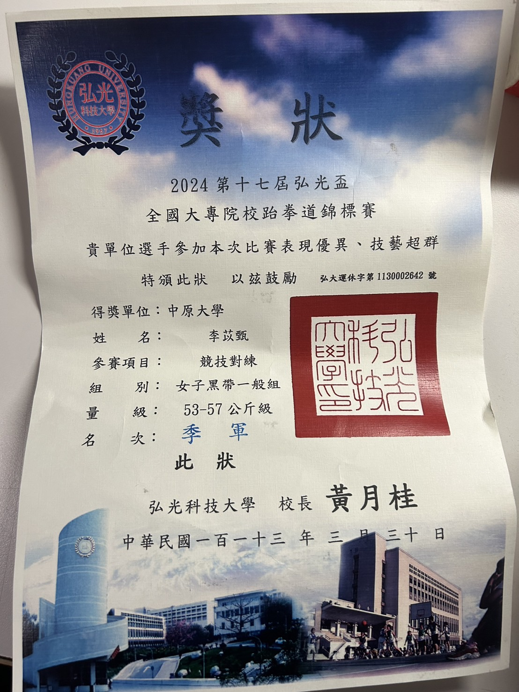
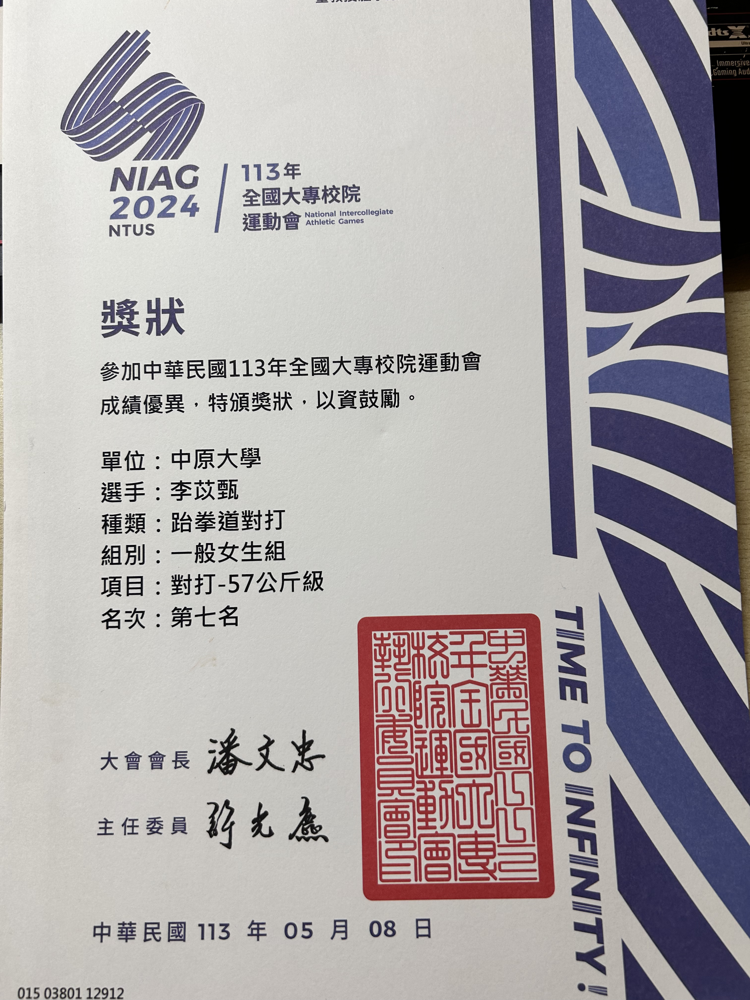
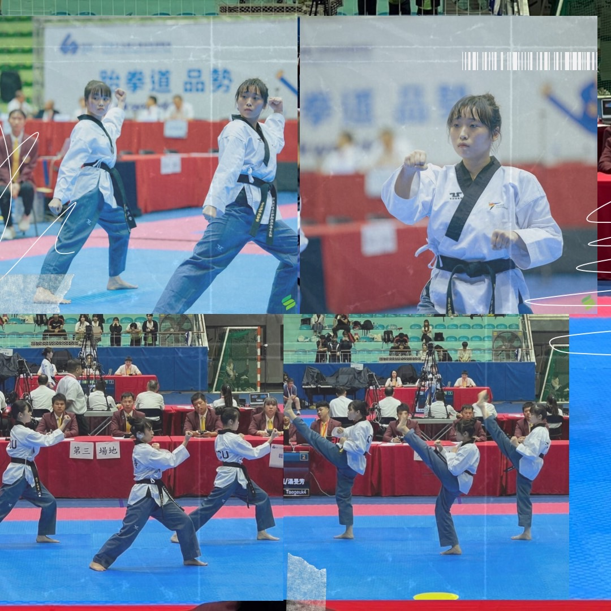

大專院校跆拳道賽事 (點擊展開戰績與意志力展現)
核心特質： 高壓環境下的專注力、追求卓越的心理素質與紀律。
比賽經歷：
- 第十七屆弘光盃對打 - 第三名
- 113年全大運品勢與對打 - 第七名
轉化感想：
運動員的訓練，是我在面對設計高壓、連續熬夜趕大評時最強大的後盾。在全大運的高強度競爭中進入八強，讓我真切體會到「專注細節」與「沈著應變」的重要性。
對打賽事中與強敵交手、未能抓住關鍵得分點的經驗，更鍛鍊了我快速修正錯誤的檢討能力。未來我將這份不服輸、高度紀律的運動員精神帶入設計創作中，並持續爭取入選東京聽奧國家代表隊，挑戰自我極限！



